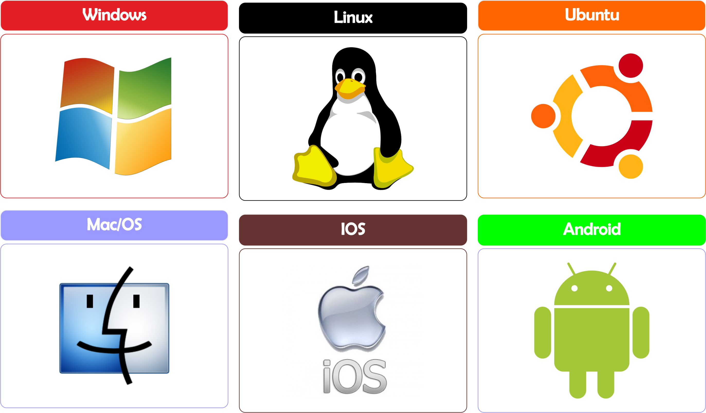

Descripcion Profesional
Analista Programador, 29 años, Formado en Santo Tomas, con 10 años de experiencia en el área de Ti, desempeño ultimos 5 años como soporte ti, adquiriendo amplias hablidades en el armado, mantencion y configuaracion de equipos y redes informaticas, ademas conocimientos en programacion en lenguajes, Phyton, java, C#, Html, Css, Sql Server, ademas de conocimientos en windows server y administracion de Windows Server 2012.

Buen Profesional.
recomiendo su trabajo.

Capto la idea de mi proyecto sin inconvenientes.
Me ayudo a desarrollar un sistema que cumplio a cabalidad con mis espectativas.

Reparo los equipos de mi empresa.
confiable y recomendable.
instagram:@danielsoto
facebook:Daniel Soto Guerrero
Youtube: DanielsvideoFotografia
© Copyright daniel Soto